Dieses Tutorial erklärt, wie man neue Animationen in die Anim(X).mul-Datei einfügt.
Zuerst wählen wir den Tab 'Animationen'. Dort wählen wir anschließend unten 'Settings' > 'Animationen Edit' aus.
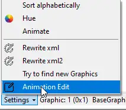Daraufhin öffnet sich der Animation Editor. Dort wählen wir unter 'Choose anim File' die jeweilige Animations-.mul-Datei aus, die wir verwenden möchten, um neue Animationen einzufügen.
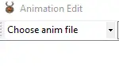Jetzt suchen wir die ID, auf die wir die neuen Animationen importieren möchten. Man kann auch die Suche anstoßen, um freie IDs zu finden, und sich dann einen Platz aussuchen.
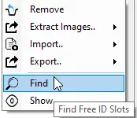Nun wählen wir die Animation aus dem Verzeichnis aus und importieren diese.
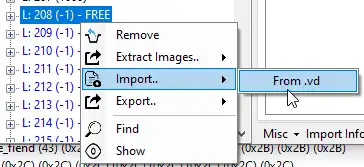Die Animation wurde nun in den ID-Slot importiert.
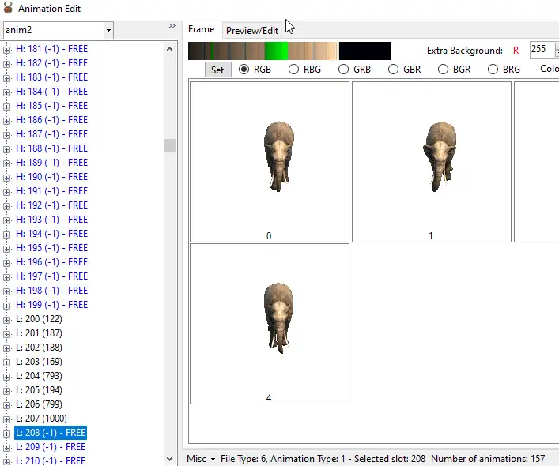Nun speichert man die jeweilige Anim.mul und navigiert zum Verzeichnis, in dem die Daten gespeichert werden. Diese kopiert man anschließend in das Ultima Online-Verzeichnis.
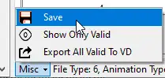 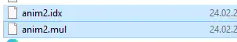Nun nimmt man Einstellungen in den Dateien 'Bodyconv.def' und 'mobtypes.txt' im Ultima Online Verzeichnis vor. Zuerst prüft man, ob nicht bereits gleiche Zahlen vorhanden sind, und trägt dann dort die Einstellungen für die jeweilige Animation ein, die man ansprechen möchte. Als Beispiel hab ich hier den Nummer 1000 bzw. 1001 für den Elefant und 1000 für das Chamel genommen.
Bodyconv.def :
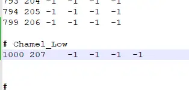mobtypes.txt :
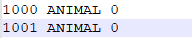 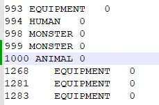Nachdem die Einstellungen in den Dateien 'Bodyconv.def' und 'mobtypes.txt' eingetragen und gespeichert wurden, kann man den UO Fiddler erneut starten und überprüfen, ob die Animationen aufgelistet sind, auch mit der richtigen Adresse, die wir dann für das Serverskript nutzen werden. Ebenso aktualisieren wir die 'AnimationList.xml', um dort auch die Animation beim Start richtig darzustellen.

Jetzt kann man nochmals überprüfen, ob alles ordnungsgemäß funktioniert.
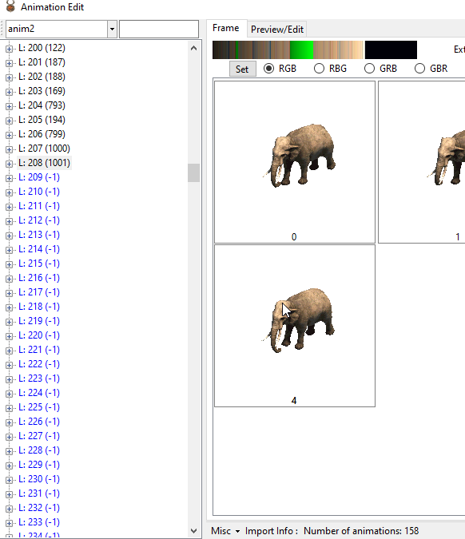Wer möchte, kann auch direkt in die 'AnimationList.xml' seinen Eintrag der neuen Animation hinzufügen, damit sie beim Start von UO Fiddler aufgelistet wird. Dazu navigiert ihr zu eurem 'AppData\Roaming\UoFiddler'-Pfad und bearbeitet die Datei. Gebt der Animation einen Namen und tragt die gleiche Body-Adresse ein, zum Beispiel 1000, wie im Beispiel angegeben.
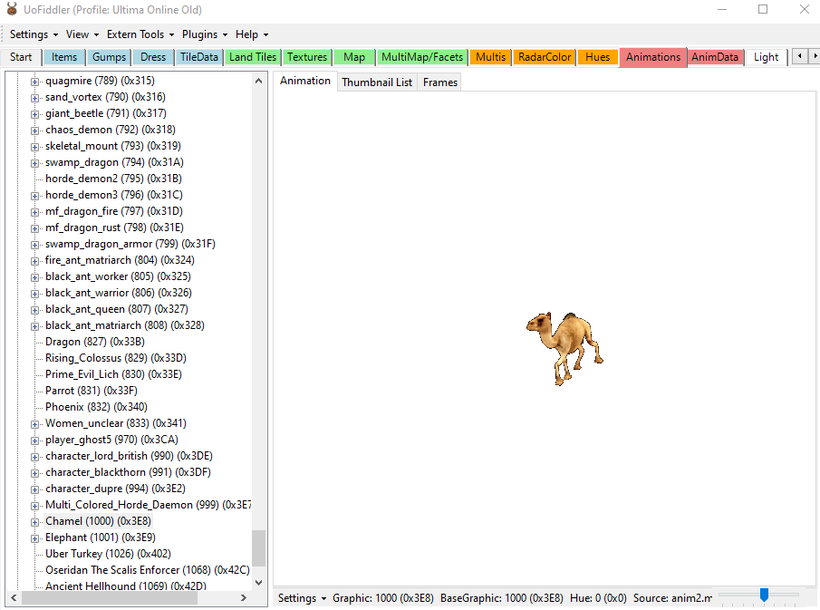 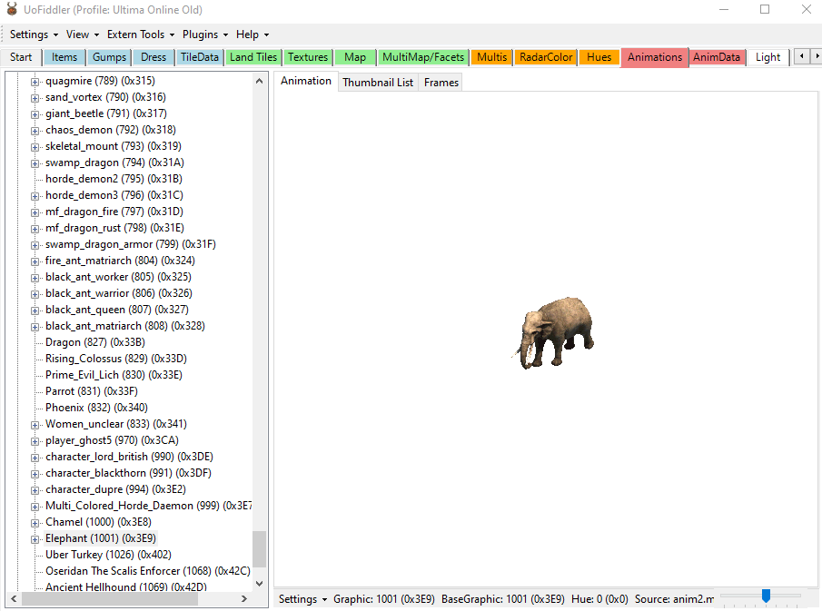Als Nächstes erstellt ihr ein Skript für den Server, gebt dort die Body-Nummer an und startet dann den Server.
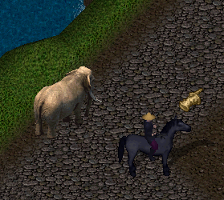